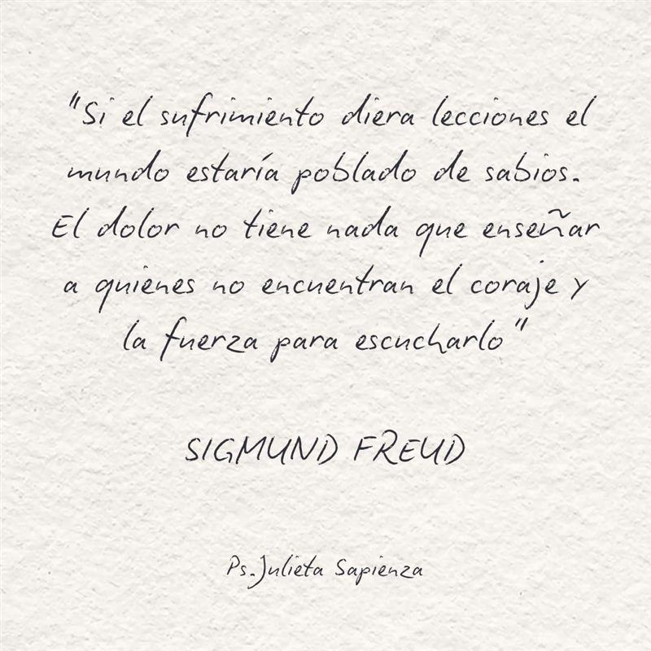
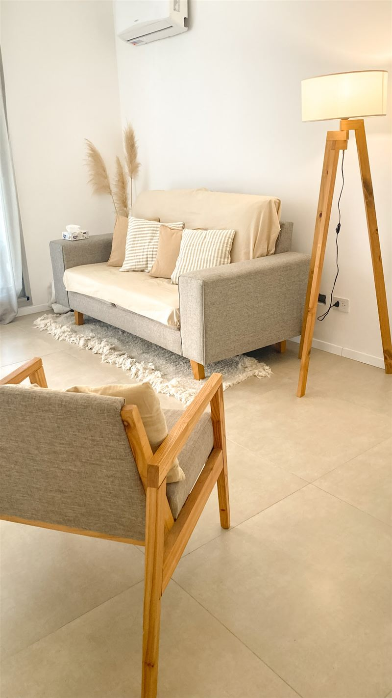
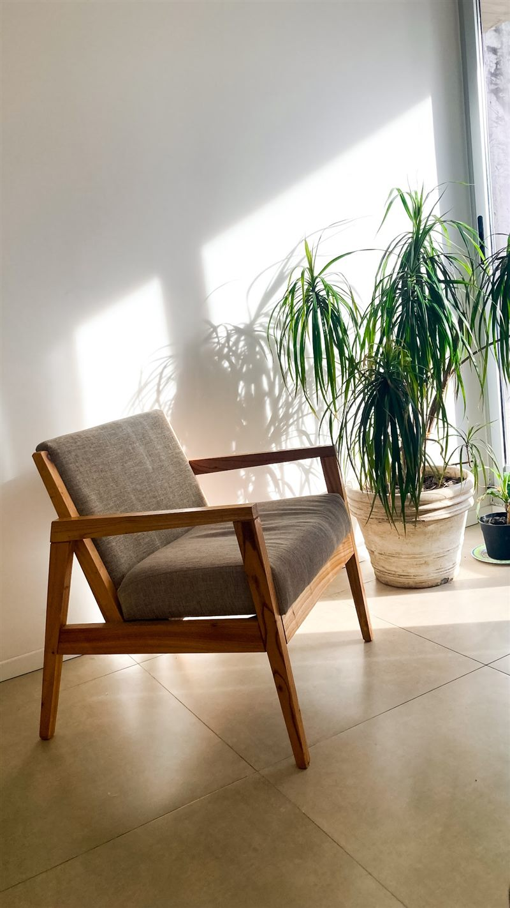
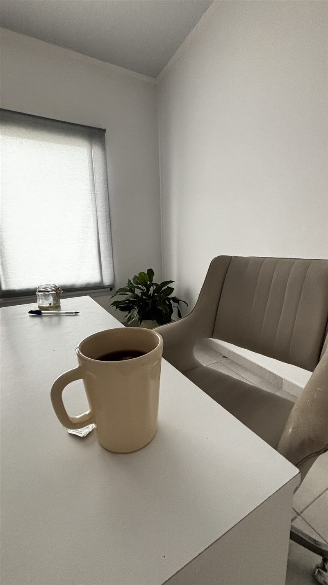

Psicóloga · Rosario, Santa Fe
Un espacio para escuchar lo que te pasa.
Consultorio en Alvear 472, Rosario. Turnos de lunes a viernes, de 8:30 a 20 h.
Los botones de contacto se activan cuando arrancamos con la versión oficial.
- PresencialAlvear 472, Rosario
- Lunes a viernes8:30 a 20 h
- Primera consultaSe coordina por mensaje

Una frase que eligió compartir
“El coraje y la fuerza para escucharlo.”
Sigmund Freud · compartida por Ps. Julieta Sapienza
Hacer terapia es darse ese tiempo: un lugar propio para poner en palabras lo que pesa.
El consultorio
Luz natural, madera y calma en Alvear 472.



Cómo empezar
Tres pasos para la primera consulta.
Escribime
Un mensaje corto contando qué estás buscando alcanza.
Coordinamos
Acordamos día y hora, de lunes a viernes entre las 8:30 y las 20.
Primera consulta
Nos vemos en el consultorio de Alvear 472, Rosario.
Horarios y contacto
De lunes a viernes.
| Lunes a viernes | 8:30 a 20:00 |
|---|---|
| Sábado y domingo | Cerrado |
Rosario, Santa Fe Teléfono: 341 652-8420
Primera consulta
Escribime y coordinamos.
Consultorio en Alvear 472, Rosario · Lunes a viernes de 8:30 a 20 h.
Los botones de contacto se activan cuando arrancamos con la versión oficial.